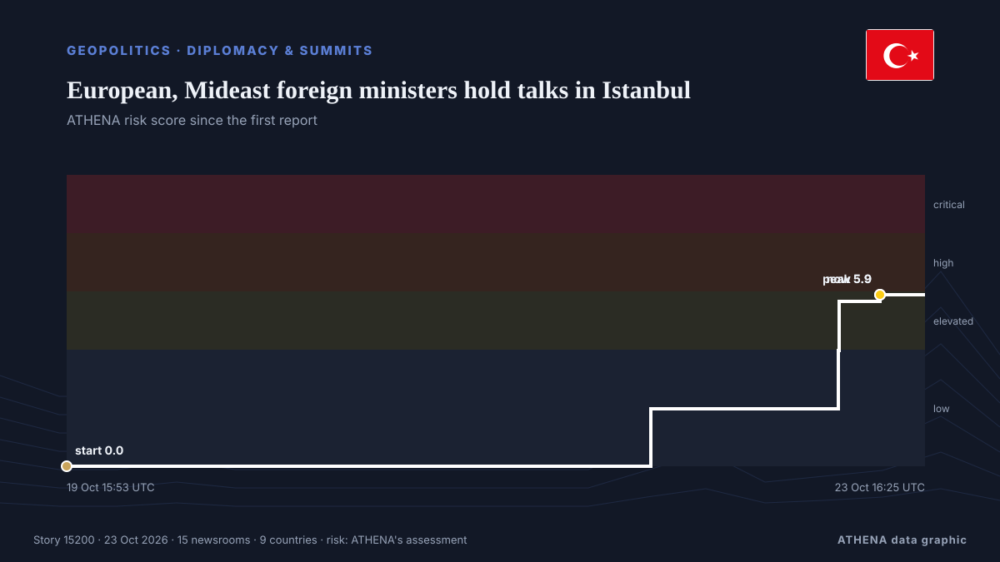

European, Mideast foreign ministers hold talks in Istanbul

Fidan praised regional cooperation Friday, saying, "Lasting solutions cannot be imposed from outside." de The New Arab
Relayé de façon indépendante par 15 médias dans 9 pays depuis le 19 oct. ; premier à l'annoncer : Hürriyet Daily News ; la couverture continue de s'étendre. ATHENA juge le risque élevé (6.9/10), surtout en raison de la gravité des dommages décrits et du rythme de la couverture. La confiance est de 93 % (élevée) : 15 médias indépendants le confirment, avec une fiabilité moyenne des sources de 80 %.
Pourquoi c'est important: Les évolutions de sécurité et de diplomatie peuvent déplacer alliances, échanges et marchés bien au-delà des pays directement concernés.
Ce qui a changé : 14 nouveaux articles de 10 rédactions dans les 24 heures jusqu'au 23 oct..
Les titres sont affichés en anglais, tels que publiés.
En un coup d'œil
Sélectionné, noté et rédigé par la méthodologie publiée d'ATHENA. Aucun rédacteur n'intervient sur un événement en particulier. Comment il est produit ›
| 19 Oct 09:38 UTC | 1 |
|---|---|
| 19 Oct 15:38 UTC | 0 |
| 19 Oct 21:38 UTC | 0 |
| 20 Oct 03:38 UTC | 1 |
| 20 Oct 09:38 UTC | 0 |
| 20 Oct 15:38 UTC | 0 |
| 20 Oct 21:38 UTC | 0 |
| 21 Oct 03:38 UTC | 0 |
| 21 Oct 09:38 UTC | 0 |
| 21 Oct 15:38 UTC | 0 |
| 21 Oct 21:38 UTC | 0 |
| 22 Oct 03:38 UTC | 3 |
| 22 Oct 09:38 UTC | 6 |
| 22 Oct 15:38 UTC | 1 |
| 22 Oct 21:38 UTC | 2 |
| 23 Oct 03:38 UTC | 3 |
| 23 Oct 09:38 UTC | 6 |
| 23 Oct 15:38 UTC | 2 |
| 19 Oct 15:53 UTC | 0.0 |
|---|---|
| 22 Oct 09:33 UTC | 2.0 |
| 23 Oct 06:43 UTC | 4.0 |
| 23 Oct 06:44 UTC | 5.7 |
| 23 Oct 11:19 UTC | 5.9 |
| 23 Oct 16:25 UTC | 6.9 |
Pourquoi ces chiffres
Importance
Risque
Confiance
La couverture : qui l'a annoncé, et quand
titre tel que publié · ouvre l'original- Hürriyet Daily News · Turquie · TurkeyFidan to meet EU top diplomat, Rutte in Brussels
- Hürriyet Daily News · Turquie · TurkeyTurkish ministers in Brussels for security, migration talks
- Express Tribune · PakistanTurkish foreign minister to host top diplomats in R4, R4+E3 meetings in Istanbul on Friday
- The Straits Times · Singapour · SingaporeTurkey to host regional and European foreign ministers for talks on regional conflicts, source says
- Turkish Minute · Turquie · TurkeyTop European, Mideast diplomats to meet in İstanbul Friday
- Arab News · Arabie saoudite · Saudi ArabiaTop European, Mideast diplomats to meet in Istanbul Friday: Turkish diplomatic source
- Al-Monitor · États-Unis · United StatesTurkey to host regional and European foreign ministers for talks on regional conflicts, source says
- Hürriyet Daily News · Turquie · TurkeyTürkiye to host key summit with regional, European powers
- Anadolu Agency (English) · Turquie · TurkeyTurkish foreign minister to host top diplomats in R4, R4+E3 meetings in Istanbul on Friday
- Cyprus Mail · Chypre · CyprusTurkey to host regional and European foreign ministers for talks on regional conflicts
- Türkiye Today · Turquie · TurkeyTürkiye to host regional, European foreign ministers for talks on regional conflicts
- Dawn · PakistanPakistan, Egypt, Saudi Arabia, Turkiye to meet European trio in Istanbul
- Al Jazeera English · QatarIran war live: European, Middle East FMs in Istanbul for security talks
- Iran International (English) · IranIstanbul meeting: A new division of labor in the Iran war?
- Asharq Al-Awsat (English) · Arabie saoudite · Saudi ArabiaIstanbul Hosts Middle East, European FMs to Discuss Regional Crises
- Hürriyet Daily News · Turquie · TurkeyIstanbul to host European, regional ministers for crisis talks
- The New Arab · INTEuropean, Mideast foreign ministers hold talks in Istanbul
- Turkish Minute · Turquie · TurkeyEuropean, Mideast foreign ministers discuss regional crises in İstanbul
- Hürriyet Daily News · Turquie · TurkeyRegional powers, European heavyweights meet in Istanbul for 1st joint talks
- Al-Monitor · États-Unis · United StatesEuropean, Mideast foreign ministers hold talks in Istanbul
- Gulf News · Émirats arabes unis · United Arab EmiratesEuropean and Middle Eastern powers hold key talks on Strait of Hormuz and Yemen crises
- Anadolu Agency (English) · Turquie · TurkeyR4+E3 foreign ministers' meeting begins in Istanbul with Italy's participation
- Anadolu Agency (English) · Turquie · TurkeyTurkish foreign minister warns new attack on Iran would escalate regional conflict
- Hürriyet Daily News · Turquie · TurkeyTürkiye warns against renewed strikes on Iran as Istanbul hosts high-level talks
- Anadolu Agency (English) · Turquie · TurkeyTurkish, Italian foreign ministers meet in Istanbul